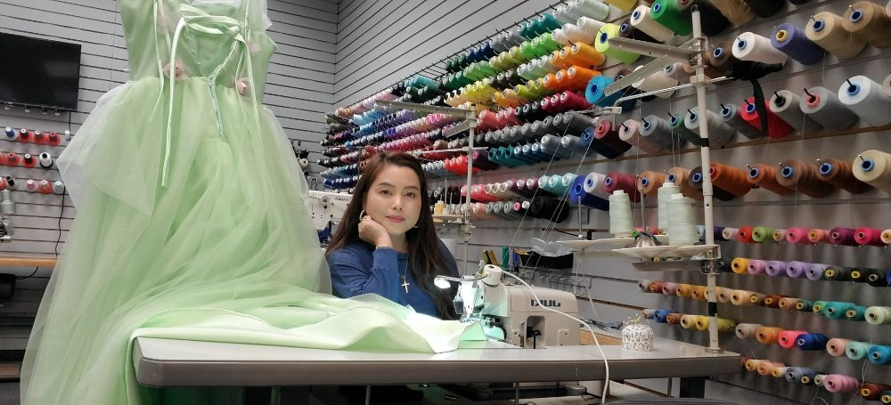

About Z Alterations & Bridal Sewing
Welcome to Z Alterations & Bridal Sewing! We are deeply honored and excited to have the opportunity to serve our wonderful community. Backed by 22 years of dedicated sewing and tailoring experience, our studio specializes in precision alterations, custom apparel design, master bridal sewing, and a wide array of specialized garment care services tailored to meet your unique needs.
We take immense pride in providing exceptional craftsmanship for women, men, and children alike. Whether you need a simple, flawless everyday alteration or a breathtaking, custom-made piece designed specifically for your most momentous life celebrations, we approach every single project with uncompromising passion, attention to detail, and a commitment to excellence. You can view our full range of offerings by exploring our professional services page.
Your garments deserve expert hands and thoughtful care. Please do not hesitate to stop by our studio or visit us to discuss how we can bring your fashion vision to life. We look forward to serving you with warmth and professionalism.

Our Heritage & Craftsmanship
Every stitch tells a story. At Z Alterations, we combine traditional tailoring techniques with modern styling sensibilities to ensure every fit is nothing short of perfection.
From intricate wedding gown beadwork and complex structural adjustments to routine wardrobe refreshes, our workspace is equipped to handle all your tailoring requirements under one roof.